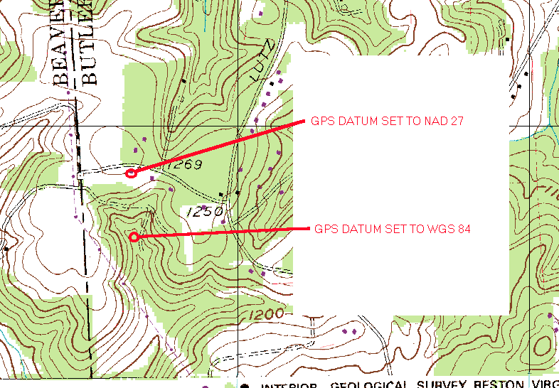

The following example of GPS datum differences was kindly provided to the XMPP Standards Foundation by Randy Steele of Apollo, Pennsylvania (URL: <http://www.nb.net/~resteele/>) and is archived here so that a permanent link is available from XEP-0080: User Geolocation.
BEGIN EXAMPLE
This is an example of the differences in the datums you can use with a GPS. Below is a site I was checking out. I marked it on my GPS in the field. When I got back home to find it on the topo map, I noticed something was not right. Using the UTM coordinates from the GPS, I located the site on the topo map. But the map site and the site I checked in the field did not match. The terrain was different, the site I actually checked was near the road (the top red circle). I then remembered about map datums. The topo map was made to NAD27, while my GPS was set to WGS84. After changing the GPS to the NAD27 datum, all was fine. So the moral of this story is: MAKE SURE THE GPS DATUM AND THE MAP DATUM MATCH!!! Note the difference in the circle locations. I also changed my GPS datum to NAD27.

END EXAMPLE